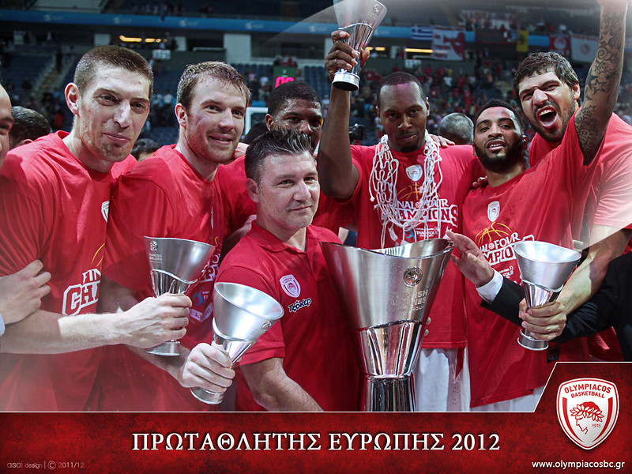
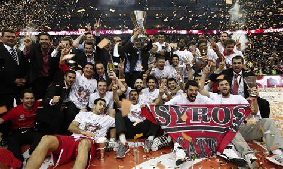
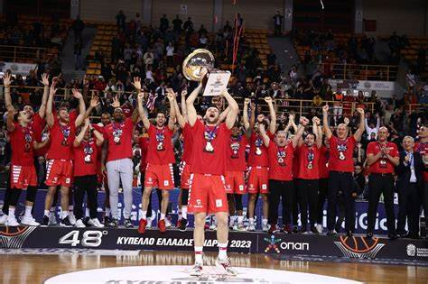

Η Ευρωπαϊκή Κατάκτηση του 2012
Ο Ολυμπιακός κατέκτησε το τέταρτο ευρωπαϊκό του τίτλο στην Euroleague το 2012, με μια επική ανατροπή στον τελικό απέναντι στην ΤΣΣΚΑ Μόσχας, κερδίζοντας με 62-61. Η ομάδα με αρχηγό τον Βασίλη Σπανούλη έκανε μια από τις πιο συγκλονιστικές πορείες στην ιστορία της διοργάνωσης.
Η Κατάκτηση της Euroleague το 2013
Το 2013, ο Ολυμπιακός συνέχισε την κυριαρχία του στην Ευρώπη, κατακτώντας την Euroleague για δεύτερη συνεχόμενη χρονιά. Στον τελικό αντιμετώπισε την Ρεάλ Μαδρίτης και επικράτησε με 100-88, με τον Σπανούλη να είναι ξανά ο ηγέτης της ομάδας.
Ελληνικά Πρωταθλήματα
Ο Ολυμπιακός κατέχει αρκετά ελληνικά πρωταθλήματα και συνεχώς είναι στην κορυφή του ελληνικού μπάσκετ, αναδεικνύοντας τους καλύτερους παίκτες και κερδίζοντας τίτλους σε κάθε διοργάνωση. Η ομάδα έχει κατακτήσει πάνω από 10 πρωταθλήματα Ελλάδας, ενώ έχει δημιουργήσει ένα αήττητο ρεκόρ σε εθνικό επίπεδο.